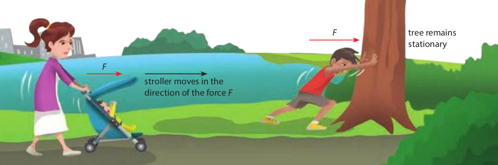
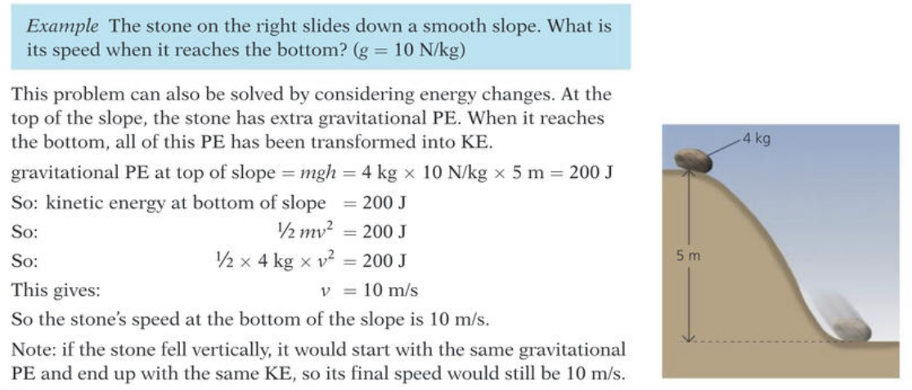

Energy can be divided into energy stores and energy transfers.
Energy can be transferred from one store to another, even within the same object.
4.1: Work and Energy
4.1: Work and Energy
4.1: Work and Energy
4.1: Work and Energy
### 4.1: Work and Energy
* Energy exists in different forms.
* Stored energy is very useful and is called **potential energy**.
* **Examples of energy stores:** Gravitational, elastic strain, chemical, electric, magnetic and nuclear
* **Examples of energy transfer:** kinetic energy, electrical energy, thermal energy, radiant energy, wave energy
### 4.1: Work and Energy
##### Stores of Energy
* A moving object has **kinetic energy**: The faster an object moves, the greater its kinetic energy.
* If you lift an object upwards, you give it **gravitational potential energy**.
* Fuels such as coal or petrol are stores of **chemical energy**.
* Batteries are also stores of chemical energy.
* Uranium is an example of a nuclear fuel, which is a store of **nuclear energy**.
* If you stretch a rubber band, it becomes a store of **strain energy**, also known as **elastic energy**.
* If you heat an object so that it gets hotter, you are giving energy to its atoms. The energy stored in a hot object is called **internal energy**.
* If you get close to a hot object, you may feel **thermal energy** coming from it.
4.1: Work and Energy
### 4.1: Work and Energy
> When anything changes, energy is transferred.
* This energy which is transferred to an object to cause some change is called **work**.
* The SI unit of work is the **Joule** (J)
> $$\text{work done} = \text{energy transferred}$$
> or
> $$W = \Delta E$$
### 4.1: Work and Energy
* **Mechanical work** is done when a force moves something.
* No work is done *in the scientific sense* by someone standing still holding a heavy pile of books: an upward force is exerted, but no motion results.
* The amount of work done $W$ depends on the size of the force $F$ applied and the distance $d$ it moves.
4.1: Work and Energy

In physics, no work is done if the object does not move
### 4.1: Work and Energy
For **mechanical work** in particular, we can use the following equation:
> $$ \begin{aligned} \text{work done} & = \text{force} \times \text{distance moved in the} \\\\ & \quad \quad \quad \quad \quad \quad \text{ direction of force} \end{aligned} $$
> or
> $$ W = F \times d$$
### 4.1: Work and Energy
**Question:** A librarian pushes a trolley of books for shelving. The horizontal force $F$ exerted by the librarian on the trolley is $8\\; N$ and the trolley moves a distance of $5\\; m$ in the direction of the force.
* Calculate the work done on the trolley
* Explain what happened to the mechanical work done
**Question:** A car moving in a straight line with $2.0 × 10^5 \\;J$ of kinetic energy is brought to a
stop by a constant resistive force of $4.0 × 10^3\\; N$. What is the stopping distance?
4.2: Energy Transfers
### 4.2: Energy Transfers
When anything changes, energy is transformed.
> The **principle of conservation of energy** states that energy cannot be created or destroyed, it can only be transferred.
* The principle of conservation of energy tells us that we can account for all the energy that is transferred in any process.
* Some useful energy is always lost as useless energy in the surroundings
4.2: Energy Transfers
4.2: Energy Transfers
4.2: Energy Transfers
4.2: Energy Transfers
An effective way to represent the principle of conservation of energy is by using
a Sankey diagram.
Sankey diagram of a rocket flying upward
4.2: Energy Transfers
Sankey diagram of energy transfer while throwing a stone upward.
4.2: Energy Transfers
Sankey diagram of an electrical energy distribution system
4.2: Energy Transfers
Try not to mix stores and transfers on the same Sankey diagram.
4.2: Energy Transfers
4.2: Energy Transfers
4.2: Energy Transfers
4.2: Energy Transfers
### 4.3: Calculating PE and KE
* Potential energy is the energy an object has because of its position or condition.
* **Gravitational potential energy** $E_P$ is energy possessed by a mass because of its position in a gravitational field.
* When a mass is moved away from the Earth:
* the work done on the mass against the field
* increase in gravitational potential energy $\Delta E_P$
* When a mass moves towards the Earth:
* the work is done by the field on the mass
* results in a decrease in gravitational potential energy
### 4.3: Calculating PE and KE
* We use $\Delta E_p$ because most points on the surface of the Earth are not considered to have zero gravitational potential energy.
* To lift an object of mass $m$ through a vertical height $\Delta h$ in a gravitational field with strength $g$ needs a force equal and opposite to the weight $mg$ of the body.
4.3: Calculating PE and KE
If you lift a mass of $3\; kg$ vertically through $2\; m$, you have to exert a vertically upward force equal to the weight of the body
So work done is $30\; N \times 2\; m = 60\; N m = 60 \;J$.
### 4.3: Calculating PE and KE
Using the equation $W = F \times d$, we can find:
> $$\text{change in g.p.e} = \text{mass} \times g \times \text{change in height}$$
> or
> $$\Delta E_p = mg \Delta h$$
If $m$ is in $kg$ and $g$ in $m/s^2$ and $Δh$ in $m$,
then $\Delta E_p$ is in $J$.
4.3: Calculating PE and KE
### 4.3: Calculating PE and KE
* You can raise an object in two ways:
* straight up at an angle of $90^\circ$ from horizontal
* at an angle less than $90^\circ$ to the horizontal surface
* less force will be needed, but the distance moved will be greater.
* If there is no friction, the *work done will be the same*.
4.3: Calculating PE and KE
Question: A package of $5\; kg$ is lifted vertically through a distance of $10\; m$ at a constant speed. Calculate the gravitational potential energy gained by the package.
### 4.3: Calculating PE and KE
**Question:** Calculate the gravitational potential energy gained by a $0.2 \\;kg$ mass raised vertically by $2 \\;m$.
**Question:** Calculate the gravitational potential energy lost by a $0.4\\; kg$ mass which falls vertically by $3 \\;m$.
### 4.3: Calculating PE and KE
**Question:** How much work is done when a mass of $3 \\;kg$ ($g = 9.8 \\;N/kg$) is lifted vertically through $6\\; m$?
**Question:** A hiker climbs a hill $300\\; m$ high. If she has a mass of $51\\; kg$, calculate the work she does in lifting her body to the top of the hill.
### 4.3: Calculating PE and KE
* **Kinetic energy** is the energy an object has because of its motion.
* Work has to be done to make objects move, or move faster.
* For an object of mass m travelling with velocity v
> $$\text{kinetic energy} = \frac{1}{2} \times \text{mass} \times \text{velocity}^2$$
> or
> $$E_k = \frac{1}{2} m v^2$$
* If mass is in $kg$ and velocity is in $m/s$, then kinetic energy is in $J$.
### 4.3: Calculating PE and KE
**Question:** Calculate the kinetic energy of a car of mass $x$ travelling at
* $10\\;km/h$
* $100\\;km/h$
**Question:** The car's engine is turned off and it is allowed to roll to a stop. Calculate the distance the car travels in both the above cases if friction provides a force of $1\\;N$
### 4.3: Calculating PE and KE
**Question:** A football of mass $0.4 \\;kg$ moves with a speed of $20 \\;m/s$.
* Calculate the kinetic energy of the football.
* Calculate the momentum of the football.
### 4.3: Calculating PE and KE
* A mass above the ground has gravitational potential energy $mg\Delta h$
* When it falls, its speed increases and:
* it gains kinetic energy
* loses gravitational potential energy
* If it starts from rest and air resistance is negligible:
* the kinetic energy gained on reaching the ground equals the gravitational potential energy lost
* $E_k = \Delta E_p$
### 4.3: Calculating PE and KE
A boulder of mass $4\\; kg$ rolls over a cliff and reaches the beach below with a velocity of $20\\; m/s$.
Find:
* the kinetic energy of the boulder as it lands
* the potential energy of the boulder when it was at the top of the cliff
* the height of the cliff.
### 4.3: Calculating PE and KE
* In the case of a pendulum, kinetic and gravitational potential energy are interchanged continually.
* The energy of the bob of the pendulum is:
* fully gravitational potential energy at the end of the swing
* all kinetic energy as it passes through its central position
* In other positions it has both gravitational potential and kinetic energy.
* Eventually all the energy is transferred to thermal energy as a result of overcoming air resistance.
